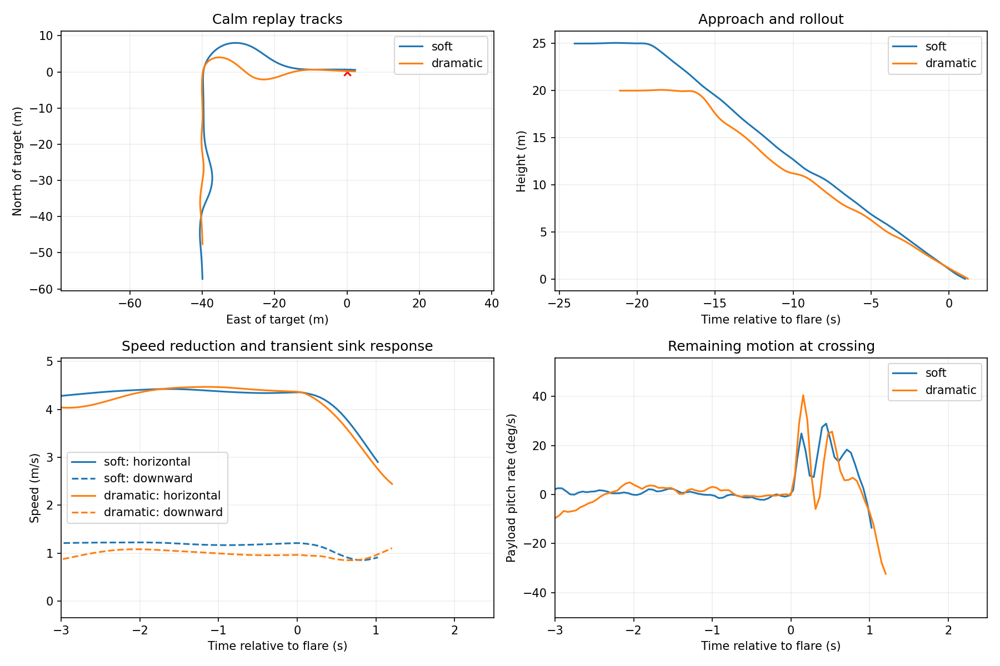
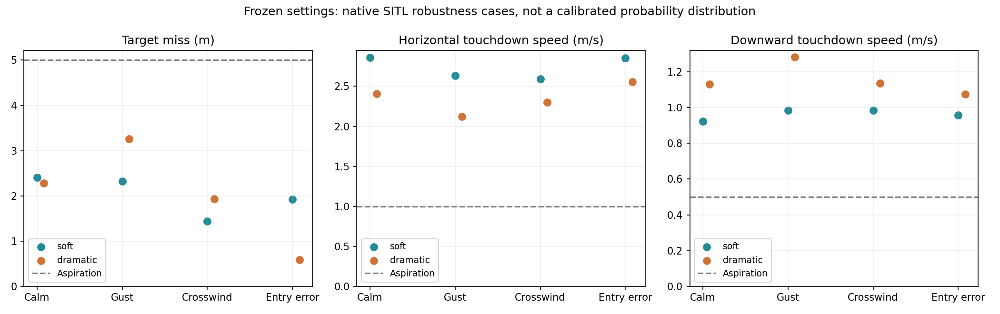
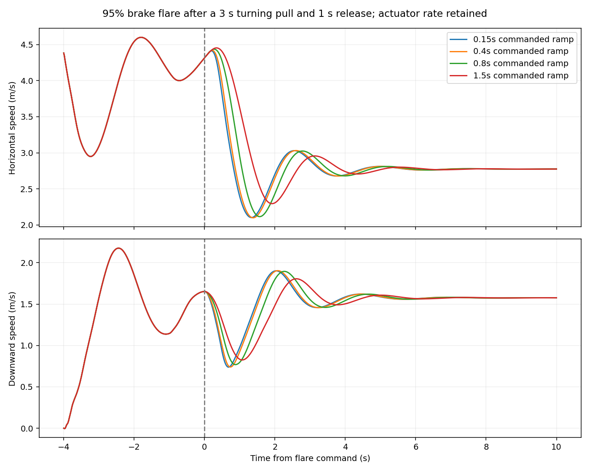

The simulator now completes a tight right-turning descent, rollout and brake flare with two approach settings. This is a precision turning-landing demonstration, not yet a settled, near-zero-speed swoop. The report retains the remaining forward speed and pitch motion rather than equating target accuracy with touchdown quality.
Soft approach · Dramatic approach
The recordings use native ArduPilot outputs, the unchanged 9-DOF Trout Lake model and actual simulated gusts. Nothing is animated into the motion. The floor and bullseye are earth-fixed; the flight path is shown in 3D, and the altitude profile uses distance traveled through the turn. The animation ends at first payload-CG ground crossing, not a modeled physical landing or slide.
Both versions use AUTO waypoint guidance, the existing heading-rate controller, throttle-only parafoil TECS and native AP_Landing scheduled common-brake flare. No MPC or firmware changes were required for this demonstration. A short research harness specifies the mission and, for the dramatic style, changes the L1 period using native estimated heading.
| Setting | Soft | Dramatic |
|---|---|---|
| Entry / corner altitude | 25 / 10 m | 20 / 8 m |
| Distance to corner / final leg | 55 / 40 m | 45 / 40 m |
| Heading-rate command limit | 25 deg/s | 45 deg/s |
| L1 period | 10 s | 6 s, restored to 10 s after estimated heading passes 65° |
| L1 damping / measurement cutoff | 1.0 / 1 Hz | 1.0 / 1 Hz |
| Flare trigger | 1.1 m | 1.1 m |
| Common-brake target / reserve | 85% / 10% | 95% / 5% |
| Flare ramp | 100 percentage points/s | 100 percentage points/s |
In the calm recordings, the soft turn reaches roughly 11° of bank and the dramatic turn roughly 19°. The dramatic turn accelerates from about 3.7 to 4.5 m/s airspeed between 30° and 90° heading, close to ordinary flight speed rather than a sustained high-energy dive.
All other selected inner lateral and longitudinal gains are unchanged. These are tested presets, not a validated continuum obtained by interpolating controller gains. The dramatic schedule handles heading wrap at north; the earlier incorrect schedule and its affected recordings remain classified as development evidence, not final validation.

All eight final runs finish within 5 m; worst miss is 3.26 m. Horizontal crossing speeds span 2.12–2.86 m/s; downward speeds span 0.92–1.28 m/s. Payload pitch-rate magnitude reaches 33.7 deg/s at crossing. These velocities and residual motion fall short of the settled touchdown objective.
The four cases per style are calm air; synthetic gusts of 0.25 m/s horizontal amplitude and one-quarter that vertically; a 1 m/s northerly velocity component, crosswind to the eastbound final leg; and a combined entry perturbation (2 m lateral offset, +1 m height, +5° heading, +5% initial speed, 150 mm/s actuator rate and 60 ms command delay). These are engineering checks, not statistical reliability estimates.
| Run | Miss (m) | Horizontal speed (m/s) | Downward speed (m/s) | Bank at crossing (deg) | Pitch rate (deg/s) |
|---|---|---|---|---|---|
| soft-calm | 2.41 | 2.86 | 0.92 | 1.5 | -17.2 |
| soft-gust | 2.32 | 2.64 | 0.98 | 2.0 | -13.7 |
| soft-crosswind | 1.44 | 2.59 | 0.99 | 0.5 | -23.6 |
| soft-entry | 1.92 | 2.85 | 0.96 | 2.0 | -15.6 |
| dramatic2-calm | 2.28 | 2.41 | 1.13 | 0.5 | -32.3 |
| dramatic2-gust | 3.26 | 2.12 | 1.28 | -1.6 | -33.7 |
| dramatic2-crosswind | 1.94 | 2.30 | 1.14 | 1.7 | -32.1 |
| dramatic2-entry | 0.59 | 2.56 | 1.08 | 0.3 | -23.0 |

The dramatic gust and crosswind cases spend about a quarter of the flare at the remaining differential-command limit. The bank remains small at crossing, but the narrow steering reserve is a real tradeoff. The complete metrics include physical travel limits, body rates and canopy–payload relative rotation and rate.
The aspirational 1 m/s horizontal and 0.5 m/s downward speeds were not achieved together. The flare produces a transient reduction in sink, but the forward-speed minimum occurs later and is accompanied by renewed sink and payload pitch motion. Simply increasing brake or changing the trigger cannot independently set position, both velocities and swing phase.
The open-loop authority screen examined 20 turning/flare combinations, followed by 12 faster-flare sensitivity cases. It is a feasibility screen, not proof that no better control law exists. It found useful transient braking but did not demonstrate a near-stop touchdown. Full brake in this screen is an extrapolation: the model uses empirical lift and drag versus brake with a smooth angle-of-attack lift rolloff; it has no validated high-brake stall or canopy-collapse behavior.

This bounded result supports continued terminal-control work, but does not justify replacing all of TECS with MPC. The next useful comparison is a short optimized brake schedule with explicit pitch/swing penalties against a small terminal predictive controller. Both must use the same model, entry states and actuator limits. Real high-brake measurements remain necessary to establish whether the predicted recovery arc and flare are physical.
run.py and native.py run the named native cases; analyze.py audits logs and computes crossing metrics; publish.py exports bounded replays and plots. selection.json identifies the final cases. provenance.json pins the unchanged simulator and native binary. Raw logs, full recordings, intermediate numerical traces and browser screenshots remain in Mission Planner/analysis/swoop-2026-10-13. Run the viewer build, then serve the tinkering repository over localhost to open the report and replay links.
Implementation and analysis assisted by Codex.